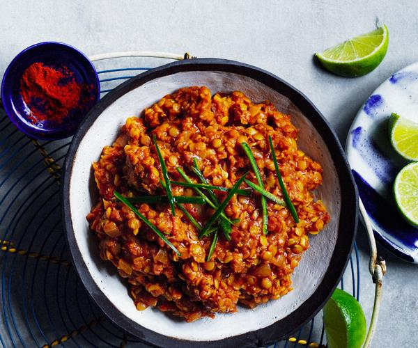

Ades Alcha Eritrean red lentil
One of Eritrean most popular vegetarian dishes, Misir Wat showcases lentils in a way that"s unlike any you"ve had before. The flavor is simply out of this world! Vegetarian-friendly and so delicious that even devout carnivores won"t miss the meat!
Ingridents
- 2 teaspoons canola oil
- 2 cups chopped red onion
- 1 tablespoon minced peeled fresh ginger
- 3 garlic cloves, minced
- 3 tablespoons tomato paste
- 1.5 tablespoons Berbere spice
- 3 cups organic vegetable broth
- 1 cup dried small red lentils
- ¼ teaspoon salt
- ¼ cup finely chopped fresh cilantro
Instruction
Step 1
Heat oil in a large Dutch oven over medium heat. Add onion to pan; cook 15 minutes or until tender, stirring occasionally. Add ginger and garlic; cook 5 minutes, stirring frequently. Stir in tomato paste and Berbere spice; cook 1 minute, stirring to combine. Gradually add broth, stirring with a whisk until blended. Increase heat to medium-high; bring to a simmer.
Step 2
Rinse lentils until cold water; drain. Add lentils to broth mixture; simmer, partially covered, 35 minutes or until lentils are tender, stirring occasionally. Stir in salt. Sprinkle with cilantro.
Nutrtion Facts
Per Serving: 454 calories; fat 3.9g; saturated fat 0.3g; mono fat 1g; poly fat 1g; protein 19g; carbohydrates 85.5g; fiber 9.5g; iron 5.1mg; sodium 867mg; calcium 43mg.